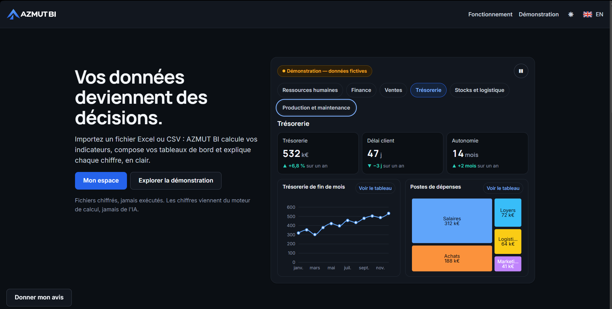
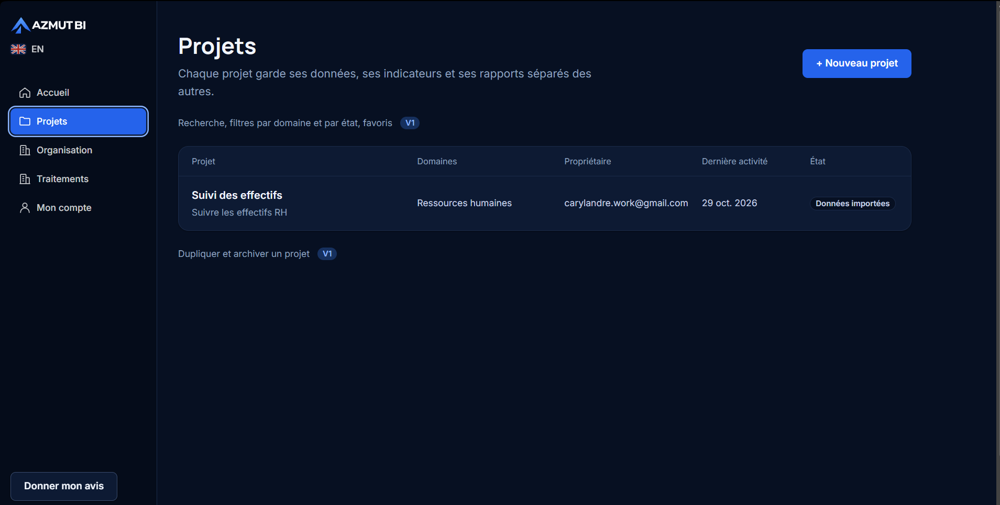
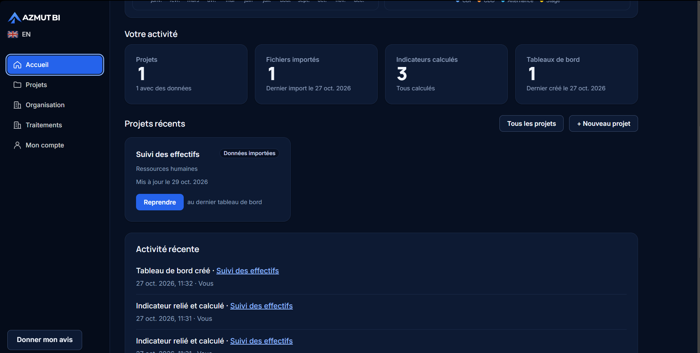
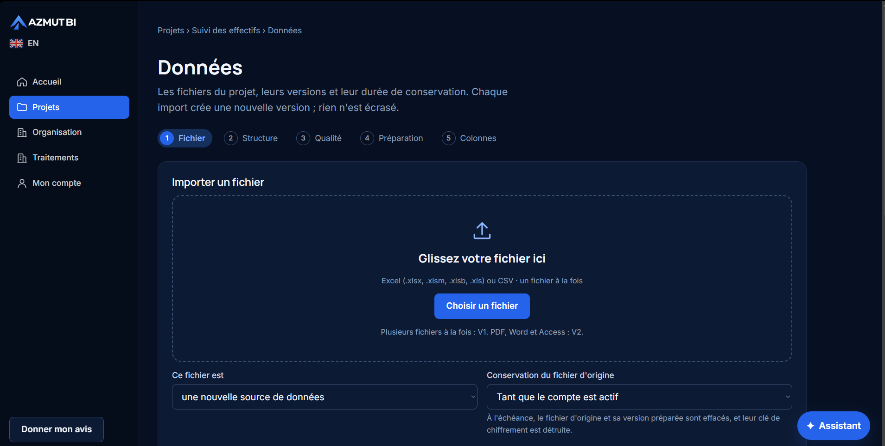

AZMUT BI
Une plateforme SaaS imaginée pour simplifier le reporting, la datavisualisation et l’interprétation des données par les professionnels.
Le constat
Dans beaucoup de PME, les données existent déjà : exports Excel, fichiers CSV, tableaux tenus à la main par les équipes RH, finance ou commerciales. Ce qui manque, c’est le temps et les compétences pour les transformer en indicateurs fiables, puis en décisions. Produire un reporting reste souvent un travail manuel, répétitif et dépendant d’une seule personne.
AZMUT BI part de ce constat : permettre à un professionnel non spécialiste d’importer un fichier et d’obtenir des tableaux de bord clairs, avec une explication en langage simple de chaque chiffre.
Comment fonctionne la plateforme
1. Importer
Un fichier Excel ou CSV est déposé dans un projet. Chaque import crée une nouvelle version : rien n’est écrasé.
2. Préparer
Un parcours guidé en cinq étapes (fichier, structure, qualité, préparation, colonnes) contrôle et met en forme les données avant tout calcul.
3. Calculer
Les indicateurs sont reliés aux colonnes du fichier puis calculés par un moteur de calcul dédié, à partir d’un référentiel de KPI par domaine métier.
4. Visualiser et comprendre
Les tableaux de bord sont composés automatiquement, et un assistant IA explique les résultats en clair, sans jamais produire lui-même les chiffres.
Mes choix de conception
- Fiabilité des chiffres : les valeurs viennent toujours du moteur de calcul, jamais de l’IA. L’IA sert à expliquer et à guider, pas à calculer.
- Confidentialité : les fichiers importés sont chiffrés et ne sont jamais exécutés. L’utilisateur choisit leur durée de conservation ; à l’échéance, le fichier et sa version préparée sont effacés et leur clé de chiffrement détruite.
- Organisation par projet : chaque projet conserve ses propres données, indicateurs et rapports, séparés des autres.
- Traçabilité : versions des fichiers, historique d’activité et suivi de l’état de chaque projet (données importées, indicateurs calculés, tableaux de bord créés).
- Accessibilité : interface en français et en anglais, pensée pour des utilisateurs qui ne sont pas analystes.
Exemples d’indicateurs
La démonstration couvre six domaines métiers. En trésorerie, par exemple : trésorerie disponible, délai de paiement client, autonomie de trésorerie en mois, évolution de la trésorerie de fin de mois et répartition des postes de dépenses. En ressources humaines : suivi des effectifs, notamment par type de contrat (CDI, CDD, alternance, stage).
Mon travail
- Définition du positionnement et des fonctionnalités de la plateforme.
- Conception d’un référentiel d’indicateurs de performance organisé par domaines métiers.
- Formalisation du cahier des charges, des parcours utilisateurs et d’un design system.
- Travail sur l’intégration de données Excel / CSV, l’automatisation du reporting et les fonctionnalités d’analyse assistée par IA.
- Développement assisté par IA avec Claude Code : je conçois les fonctionnalités, je pilote la génération du code, puis je teste et ajuste.
Feuille de route
- Version 1 (en cours) : import Excel / CSV, préparation des données, calcul des indicateurs, tableaux de bord, recherche et filtres par domaine, duplication et archivage des projets.
- Version 2 : import de plusieurs fichiers à la fois et prise en charge des formats PDF, Word et Access.
- À terme : extension à d’autres fonctions support, comme la comptabilité, les achats ou la supply chain.
Ce que ce projet mobilise
AZMUT BI prolonge directement mon métier de Data Analyst : définir des indicateurs pertinents, contrôler la qualité des données, structurer un reporting et le rendre lisible pour des décideurs. Le projet y ajoute une dimension produit : spécifications, parcours utilisateurs, sécurité des données et développement.
Galerie & démonstrations
Captures de l’application en développement : démonstration de tableaux de bord, gestion des projets, activité et importation de données.







